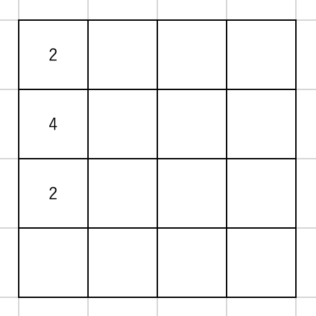

Stage 2 プログラムの土台を作る
2-2 定数を設定する
ログの設定が終わったところで、ここからは主にコード全体に関わる定数を宣言していきます。
まず、このコードではことあるごとに [row, col] という形のリストを使っていきます。その際にリストのインデックスに名前あった方がわかりやすいでしょ？ということでインデックスにそれぞれ ROW, COL と名前をつけてあげてください。
### INDEXES
ROW = 0
COL = 1
実際これどうやって使うん？
例えば A っていう変数が [row, col] で表されるとして、
A[ROW] += 2
とすれば、A が表すものの row の要素に 2 を加える、なんてことができるようになります。
~~~~~~~~~~~~~~~
マスに数字がない場合の値を EMPTY とします。board に入れる値ですね。
### SQUARES STATUS
EMPTY = 0
別に 0 でなくたって、盤面にあるはずのない数字であればなんだって構いませんよ。
マスにない数字じゃなきゃダメか？
ダメだな
はい、ダメです。
~~~~~~~~~~~~~~~
上下左右の方向にも名前をつけてあげます。
### DIRECTIONS
UP = [-1, 0]
DOWN = [+1, 0]
LEFT = [0, -1]
RIGHT = [0, +1]
[row, col] のマスからある向きに動かしたいときは [row + direction[ROW], col + direction[COL]] とする、こんな形がいいんじゃないでしょうか。
ゴメン、何言ってっかわかんねーわ
例えば [row, col] から上に行きたいときは
row -> row - 1
とすればできますよね？ここで UP = [-1, 0] にしたんですから、それを row, col に加えてやれば良いじゃないですか？
確かに。それな
他の方向でも同じ話です。
~~~~~~~~~~~~~~~
次はメソッドの返り値に名前をつけます。
### RETURN VALUES
SUCCEEDED = True
FAILED = False
「え？リターンって大体 True/False か数字くらいでしょ？なんで名前つけるの？」いい質問ですね。

何こいつ、まだ何にも聞いてないんだけど
後々 Stage 4 でお目にかかる move メソッドを例にとってみましょうか。こいつはその名の通り盤面を動かす機能なのですが、同時に「その盤面を動かすことができるか」というのも確認しています。例えばこんな場合。
この盤面を「左！」っていったところで、動かそうにも動かせませんよね。これを判定するのもゆくゆくは move メソッドの役割になります。
ではこんな時、何をリターンすればよろしいでしょう？Null ですか？はたまた 0？ここは False ですか？迷いますよね。しかもコーディングしていると
あれ、このメソッドでこうなった時、リターンは Null だっけ？ 0 だったかな？
となってしまいます。バグの元ですよ、そんなの。

じゃあどうすりゃ良いんだよ!?
そこで FAILED という「リターン専用の」値を用意してあげることで、
あ、こいつ動かせなかったんだな
と一目瞭然に結果がわかるようにしています。
~~~~~~~~~~~~~~~
最後にゲーム設定のデフォルトを書いておきましょう。
### DEFAULT VALUES
DEFAULT_PROB4 = 1 / 8
DEFAULT_SIZE = 4 # board size = 4 * 4
DEFAULT_GOAL = 2048
MAX_GOAL = 65536
新しい数を入れていく中で 4 を出すのは 8 回に 1 回の確率、盤面のサイズは 4 × 4, デフォルトのアガリは 2048, そしてこのコードでは 5 桁までしか表示するスペースがないので 2 ^ 16 である 65536 を上限にとっています。